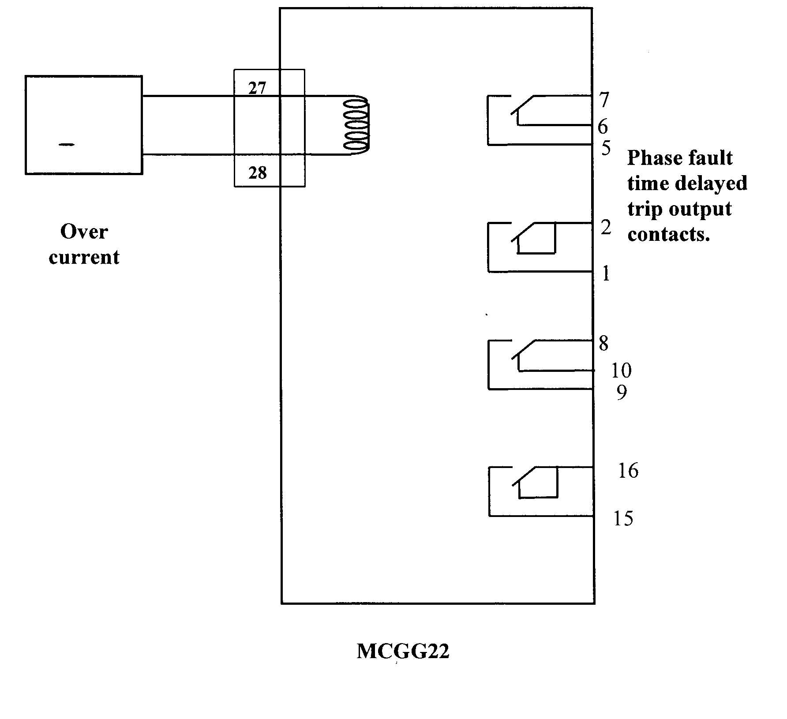

| Protection |
Earth Fault Relay
MCGG22
GEC
Document No: EFR-025-r0
Issued to: West El Asher
Using Secondary injection test set
|
|
|
|||
| Equipment: Earth Fault Relay MCGG22 GEC |
Document No: EFR-025-r0 |
|||
|
Issued to: West El Asher |
||||
| Status: |
||||
| Procedure: Using Secondary injection test set |
Approved Date : 29 Dec 1997 | |||
| Date to be Reviewed: Dec 2002 | ||||
Introduction
The MCGG is a microprocessor based over-current relay available in single, two, three or four pole versions manufactured by GEC ALSTHOM. Each pole is provided with a choice of four inverse time characteristics and three definite time characteristics as well as a trip test position. An instantaneous element is also available on each phase. The MCGG 22 is the single phase version.
This procedure details the steps required to completely check the proper operation and calibration of the MCGG22 relay. It is recommended this procedure be carried out on a yearly bases. This work be carried out section of this document is divided into 3 sections.
The first preliminary steps to prepare for relay testing describes the activities required prior to testing. Some of these steps could be performed days before the actual test. The second section Preparation for testing describes the steps to set up the equipment for performing the actual tests. The third section is the actual test.
The document is formatted the way to minimize the possibility of error causing personal injury or damage to equipment.
The first draft initialed and tested by eng. Mohamed EL Shahat Atia, at West El Asher .
Safety Precautions
Line isolation and work permit required.
Make sure CT secondary circuits are shorted before isolating the relay current circuits for test current injection.
Switch off the DC power supply before inserting or withdrawing the relay
A work permit must be issued and the maintenance staff should carry the suitable ID safety category,
Safety fence with caution marks surrounding the work area is required.
Personal safety and healthy equipment must be used as safety shoes, safety helmet ... etc
Outage arrangement must be done.
Tools and Equipment
Secondary Injection Test Set.
Test Leads.
Multi-meter.
Work to be Carried Out
Testing the Relay, and Protection Output
Carefully follow these test procedure steps
Verify the test results match the relay setting - If not consult technical services.
Test trip all breakers associated with the relay.
Preparation
Make sure CT secondary circuits are shorted at the incoming terminal blocks before isolating the relay current circuits for test.
Look at field maintenance file and compare the position of the setting switches on relay with those shown in the setting sheet.
Switch on the MCB for the DC supply and check that terminal 13 on the relay case is positive with respect to terminal 14
.
Testing Procedure (s) Power Supply Test
Release the RESET button and check that the LED’s reset.
Press the RESET button and check that all LED’s are illuminated. This confirms that all measuring boards are operating satisfactorily.
Trip Test
Set the curve selection switches to position 111 (test mode) for the pole of the relay, which is to be tested.
Check that the LED’s associated with this pole of the relay flash at a frequency of the approximately once per second.
Press and hold the RESET button. After approximately 6 seconds the time delayed and instantaneous output elements associated with the pole under test should trip, and at the same time, the LED’s for instantaneous and time delayed elements should illuminate continuously on this pole.
Release the RESET button, the output elements should reset.
Change the curve selection switches from lll (test mode) to the position shown in the setting sheet.
Current Setting Test
Connect test leads between the current terminals on the relay (27, 28) and the current terminals on the test set.
Slowly increase the current until the green LED lights. The relay must operate with a current between +/- 10% of the setting value.
Record this value on the test sheet.
Increase the injected current to a value 25% greater than the operate value.
Slowly decrease the current until the relay and the green LED, both, reset.
Record this value on the test sheet.
Time Setting Test
Inject current into relay until the relay picks up. Keep this value and switch off the test set.
Connect the relay time delayed output contacts (No. 1, 2 or 5, 7) to the timer contacts of the test set.
Switch on the test set and inject current. The timer will stop once the relay has picked up.
Record this value on the test sheet.
Remove the leads from the time delayed contact and the test set
Instantaneous Setting Test
Connect the instantaneous trip out put contacts (No. 15, 16 or 8, 9) to the timer contacts on the test set. This is to stop the current as soon as the relay picks up.
CAUTION: Do not keep this current on the relay for more than a few seconds as it may exceed the rating and damage the relay
Increase current quickly until the instantaneous element picks up.
Record the pick up value on the test sheet. It must be within +/- 10% of the setting value.
Circuit Breaker Trip Test
Set up the circuit breaker for a trip test.
Inject current into the relay until the circuit breaker trips at the time delayed setting.
Close the circuit breaker again.
Remove the wire from the relay time delayed contact terminals No. 5 or 1.
Inject a value of current greater than the instantaneous setting suddenly into relay until the circuit breaker trips at the instantaneous setting.
Re-install the wire which was removed
Remove the shorts from the CT secondary circuits.
Return the Relay and Power Equipment to Service
Verify the test result match the relay setting. If not consult technical services.
Test trip the circuit breaker associated with the relay.
Make a final check that all switches on the relay are set according to the setting sheet.
Make sure the CT secondary circuit is in normal condition
Remove the CT shorts which were installed in the Power Supply
Return the relay and power equipment to service.

Test Sheet
Earth fault Relay
Type : MCGG22
DC Supply :
Relay rated current = 1 A
Bay No :
Date :
Setting
C.T = 400A V.T =
IS(PR) = 8.0 I S(SEC) = 0.2 I n
Curve : Difinit Time = 0.7
TMS : Iins = Is
| Neutral | Is= A | T= s | Iins = A | Alarm | Trip | Start C.B failure |
| N |
Location:
Protection
Designation:
Tested by:
Signature:
Test Date: